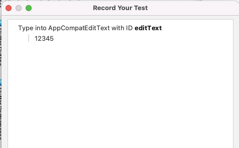
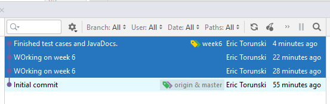

Android Studio uses the Espresso test library to record what you do on the interface and can then play it over and over to test that the results are still the same. Use your Week5 branch to test that your password complexity app works in various different scenarios. In Android Studio, click on the "Run" menu and select "Record Espresso Test":
This should launch your app, and there will also be an Espresso window recording what you have done on the app so that it can replay those steps. Click on the EditText and type a simple password: "12345". The espresso recorder will show that you typed "12345" into the EditText:

Then click on the "Login" button. You should get a Toast showing up which requirement was not met, and the TextView should show "You shall not pass!".
Result:
To save this as a test case that you can continue to test automatically, click on the "Add assertion". You want Android Studio to verify that your app shows "You shall not pass!" every time you type in "12345" in the EditText and click on the Login button.
Click on the TextView in the window:
You are recording that the getText() from this TextView should be "You shall not pass!" after clicking the "Login" button:
Click on Save Assertion. This will generate a JUnit Test class:
Click Ok. If you get a window about Missing or obsolete Espresso dependencies, click on "Yes". Then click "Add" to add the new Java class to git tracking.
You should see that this generates a function called mainActivityTest(). Running this function will test that your application shows "You shall not pass!" on the TextView when you enter "12345" in the EditText, and then click on the Login button. The highlighted code (lines 40 - 47) is trying to find the editText on the screen. It is similar to findViewById, but now it has added some descriptors: withId(R.id.editText) is the same as findViewById(R.id.editText);
childAtPosition( ) is saying that the element must also be at position 0, 2 on the screen.
the isDisplayed() means that the same widget must also be showing on the screen.
You really only need the withId() function since that's all you need to find the EditText. Change the highlighted code so that it's like this:
Now it's only using the withId( ) function to load the EditText as a "ViewInteraction" object. The next line of code appCompatEditText.perform( replaceText( "12345"), closeSoftKeyboard() );
is what tells the testing library to type "12345" into the editText. You can change the string to something else and it will type that new text instead of 12345. The function closeSoftKeyboard() makes the keyboard go away from the screen. You don't really need this part of code but it makes the result easier to see after the test is run.
The next portion of code:
first finds the Login button: allOf(withId(R.id.button), withText("Login"), childAtPosition(), isDisplayed())));
You don't need all of these parameters to describe the button. The withId() is good enough. It will already have "Login" displayed, so you don't really need to add the withText("Login") part. Change the code so it just uses the withId( ) function:
The next line tells the test software to click on the button. So so far, the test software will find the EditText, type "12345" in it. Then it finds the Login button, and clicks it. The last part of code finds the TextView and makes sure that it shows "You shall not pass!".
Modify the last part of code to remove the descriptors about withText(), isDisplayed(), withParent(). You really only need the withId() function to find the TextView:
The second line checks that the text matches "You shall not pass!". If the text matches, then the test case passes. If the test case fails then it records the fail and shows you the results when the test cases have finished running. Your test case should now look like this:
What the code is basically saying is:
Switch to your project's Android view:
Notice that there's an androidTest package there as well. This holds your test cases. Right-click on this folder and select "Run tests in ...":
You should see at the bottom that all the tests passed:
Normally in software development, at the end of the day when everyone has finished working and has gone home, the build manager will pull the latest code and then run the test cases overnight. For a large project, it might take several hours for all the tests to run, but the next morning when you arrive to work, the results should be finished and you can see if anything done the previous day has broken the normal behaviour of your application. You can then check who checked in that code and get them to fix the problem. This is done every day during software development to help fix problems immediately and cut down on the number of bugs in your code.
In the file, create a new function for testing a password that password that is only missing an upper case letter:
The @Test annotation tells JUnit that this is a function that should be called as part of running all of the tests. Write this function so that it:
You code should look like this:
Basically just copy and paste the code, but change the password that is typed in. Also get rid of the closeSoftKeyboard() just to see what happens if you don't close the keyboard. Notice there's a play button in the margin next to the function declaration. Click that button to run the test.
You should see that the test passes:
You should also add JavaDoc comments above these @Test functions just to describe what you are testing. In your application, your password should have a digit, an upper case, a lower case, and a special character. Write a test case for each of these requirements making sure that it can detect when a password is missing each of these requirements. You should then add a test case for a password that has all of these requirements and the text view should then say "Your password is complex enough".
Finally, run all the test cases and you should see that all the tests pass. You should have 5 test cases in total, although the picture only shows two tests:
Commit your code with the message "Finished test cases and Javadocs". Now think about what you've done this week. Your first commit created the GUI and added JavaDocs to your MainActivity.java and activity_main.xml file. The second commit created the JUnit test cases. It's like an IKEA instruction book where you did the first picture of adding something, and then you did the second picture where you added something.
You should be able to condense this into one step, having a commit that says add the code to MainActivity.java, activity_main.xml and add code to MainActivitTest.java all as one step. This is called "Squashing" commits down to one commit. This is good because it summarizes everything into one commit so you get a picture of everything that is happening in your branch.
On the Git tab at the bottom, select the "Log" view:
You should see your commits that you've worked on this week. Hold the Shift key down and select the commits that you want to squash into 1 commit:

Right-click on the commits, and select "Squash commits":
The next window is where you rewrite the commit message for the commits you are squashing. If you are condensing multiple commits into 1 commit, you have to write a new commit message that describes what you are doing in all these commits:
When you finish your commit message and click "Ok", you should see that there is now only 1 commit, and a message says "Commits squashed".
Now push your Week6 branch to github. Log on to your github account and find your repository:
Click on "Pull Requests" on the tab above:
Click on "New pull request":
On the next window, select "Week 5" to compare with the master branch:
Make sure that the arrow shows you are taking commits from "Week6" to merge them with "master". It should say that you are "Able to merge". This means that there are no conflicting instructions in the commits. We'll cover how to deal with conflicts later in this course.
Then click on "Create pull request":
From now on, just look for the green button and click on it. Click on the next "Create pull request", then"Merge pull request", then "Confirm merge":
Your week 5 branch should now be merged onto the master branch. Look at your master branch on the code tab on github:
Look for your test case class: MainActivityTest. You should see your test cases are now on the master branch, but they are not on your computer.
To download the commits to your master branch, make sure that you are on your master branch. Make sure that you run: "git checkout master". Then click "VCS" -> "Git" -> "Pull":
Make sure that you are pulling the master branch from github:
You should now see your changes on your master branch:
Also, if you look at the the git history of MainActivity.java, you should see all your changes are now included in the one squashed commit:
Once you have a squashed commit on your master branch, you have finished this week's lab. If you look at your github repository, you should have 1 closed pull request:
If you click on the "1 closed" link, it summarizes your merge on github:
For this week's submission on Brightspace, take a screenshot like what is above showing a summary of your closed pull request and submit that picture.
| Item | Marks |
|---|---|
| You have 5 test case functions that check each of (missing 1 upper case, missing 1 lower case, missing 1 numeric, missing 1 special character, has all requrements) | (5 marks) |
| Running your test cases all pass as described. | (1 mark) |
| Your class variables and functions are properly commented. | (1 mark) |
| You have squashed your commits into 1 commit. | (1 mark) |
| You merged your code on Github using a pull request. | (1 mark) |